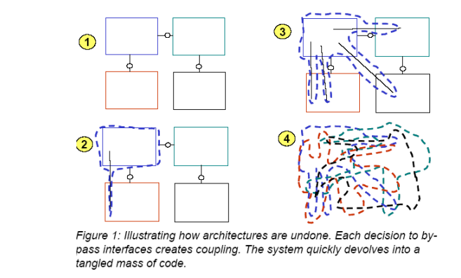
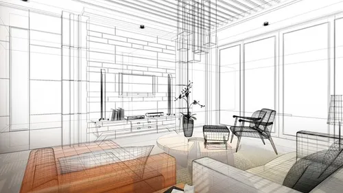
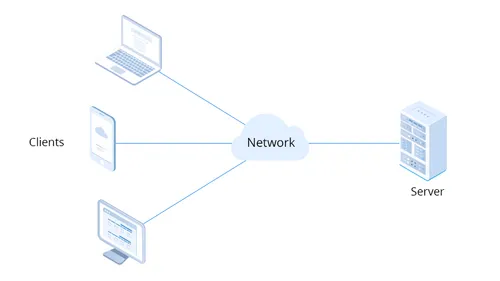
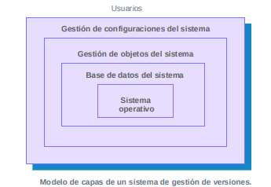
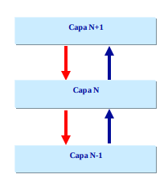
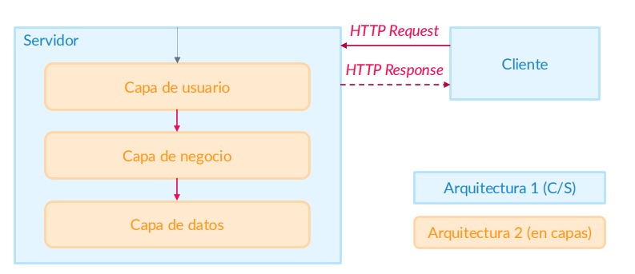
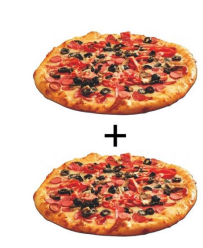
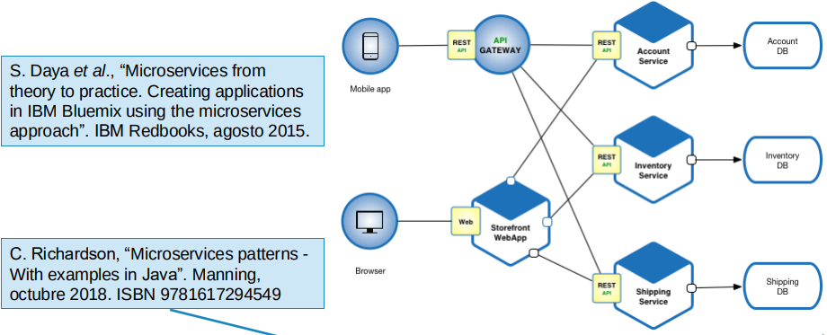

En esta sección veremos algunos principios de diseño como los de Tim Berners-Lee, la arquitectura de la Web, sus diferentes modelos y servicios.
Estos son los principios de diseño pautados por Tim Berners-Lee para el desarrollo web:
Simplicidad:
"Keep it simple, stupid!“. No confundir con la facilidad de entender el diseño.
Modularidad:
Dividir nuestro sistema en un grupo de características cercanas y bien comunicadas.
Ser parte de un diseño modular:
Debemos considerar nuestro sistema como parte de otro sistema mayor, ofreciendo las interfaces apropiadas (más complejo que modularidad).
Tolerancia: “Be liberal in what you require but conservative in what you do”.
No implica llegar a romper más allá de lo necesario (ej. dejar de utilizar estándares).
Descentralización:
Se está diseñando un sistema distribuido para la sociedad:
Test de invención: “If someone else had already invented your system, would theirs work with yours?”
Relacionado con la modularidad de dentro hacia afuera.
Principio de la potencia mínima:
La elección del lenguaje es un criterio de diseño.
El extremo de menor potencia suele ser sencillo de diseñar, implementar y utilizar.
El externo de mayor potencia suele ser atractivo y permitir hacer cualquier cosa, sólo limitado por la imaginación del programador.
Al principio, los lenguajes era muy potentes. Hoy en día, se recomienda utilizar el lenguaje menos potente posible. Cuanto menos potente el lenguaje, más se podrá hacer con los datos: “Elegí HTML para que no fuera un lenguaje de programación porque quería que diferentes programas hicieran diferentes cosas con él” (T. Berners-Lee).
Hablaremos de la arquitectura software, el estilo arquitectónico, el modelo cliente/servidor y la arquitectura en capas.
En un sentido amplio, la arquitectura del software es el diseño de más alto nivel de la estructura de un sistema, programa y aplicación.
Los objetivos de la arquitectura del software son:

“La arquitectura del software involucra la descripción de los elementos a partir de los cuales se construyen los sistemas, las interacciones entre dichos elementos, patrones que guían en su composición y restricciones sobre esos patrones” Shaw & Garlan.
En el diseño arquitectónico, se observan ciertas regularidades en la estructura, estilo y elementos utilizados dando respuesta a demandas similares.
Estas regularidades recurrentes –tomando nomenclatura de arquitectura civil– se denominan estilos arquitectónicos.

Los estilos arquitectónicos representan formas diferentes de estructurar un sistema usando componentes y conectores, siguiendo decisiones esenciales sobre los elementos arquitectónicos y estableciendo restricciones importantes sobre tales elementos y sus posibles relaciones.
Ejemplos: modelo C/S, peer-to-peer, arquitectura en capas…
En el modelo cliente-servidor (C/S), el sistema se organiza como un conjunto de servicios y servidores asociados, más unos clientes que acceden y utilizan los servicios.
Conjunto de servidores que ofrecen servicios a otros subsistemas: servidores de impresión, servidores de archivos, servidores de bases de datos, …
Conjunto de clientes que llaman a los servicios ofrecidos por los servidores: o Invocan los servicios ofrecidos por los servidores mediante un protocolo de petición-respuesta (p.ej., HTTP en la WWW)

Ventajas:
Inconvenientes:
La arquitectura en capas (también denominada arquitectura estratificada) modela la interacción entre los subsistemas organizando un sistema en una serie de capas (layers).
Cada capa presta servicios a la capa inmediatamente superior y actúa como cliente de la inferior.
Los conectores se definen mediante los protocolos que determinan las formas de la interacción entre cada par de capas. Ejemplo de modelo en capas es TCP/IP.
Este estilo soporta el desarrollo incremental de sistemas:

Ventajas:

Inconvenientes:
En desarrollo web, el estilo C/S en capas es el más utilizado.
Se trata de un estilo heterogéneo que mezcla los elementos y reglas de dos o más estilos arquitectónicos puros:
El C/S en capas se trata de un sistema jerárquicamente heterogéneo, en el que la arquitectura interna de los componentes de un sistema conforme (servidor) a un cierto estilo (en C/S) sigue un estilo arquitectónico distinto (en capas).

El Cloud Computing es un paradigma de la computación que consiste en delegar la misma en terceros. Ofrece muchísimas ventajas al delegar el control y la configuración a otra empresa.
El SaaS o Software as a Service es un ejemplo de Cloud Computing que consiste en utilizar una aplicación almacenada y procesada en un servidor remoto, sin tener que instalar nada y recibiendo los resultados de la misma en remoto. Proporciona un modelo de subscripción, asegura la seguridad de los datos, puede escalarse y hace que las aplicaciones sean accesibles desde cualquier dispositivo conectado a internet. Algunos ejemplos de aplicaciones SaaS son Dropbox y Google Drive.
El PaaS o Platform as a Service es otro ejemplo de Cloud Computing en el que se ofrece un entorno remoto para desarrollar, gestionar, personalizar y distribuir aplicaciones del cliente. Sus funciones principales son:
El IaaS o Infrastructure as a Servide es el último ejemplo de Cloud Computing que vamos a ver, en el que el proveedor proporciona acceso a infraestructura remota, como servidores, almacenamiento y redes, dejando al cliente usarlos para lo que quiera. Así, la infraestructura es escalable, se ahorra en coste de compra de hardware propio y su manteminiento y se virtualizan las tareas administrativas. Un ejemplo es Amazon Web Services (AWS).
(MBC sacados de los apuntes de Javier Gómez Aparicio)
Estilo arquitectónico en el que las aplicaciones complejas son descompuestas en uno o más servicios.
"Un microservicio es una unidad de descomposición funcional de un sistema en un servicio gestionable e independientemente desplegable"
Pequeños y focalizados

Despliegue ”zero coordination”
Un MS no conoce la implementación de base ni la de otros MS vecinos (ni siquiera de su existencia)
Se pueden ejecutar múltiples copias de un MS en distintas máquinas
NO es el estilo adecuado para comenzar una aplicación
El despliegue debe externalizarse.
